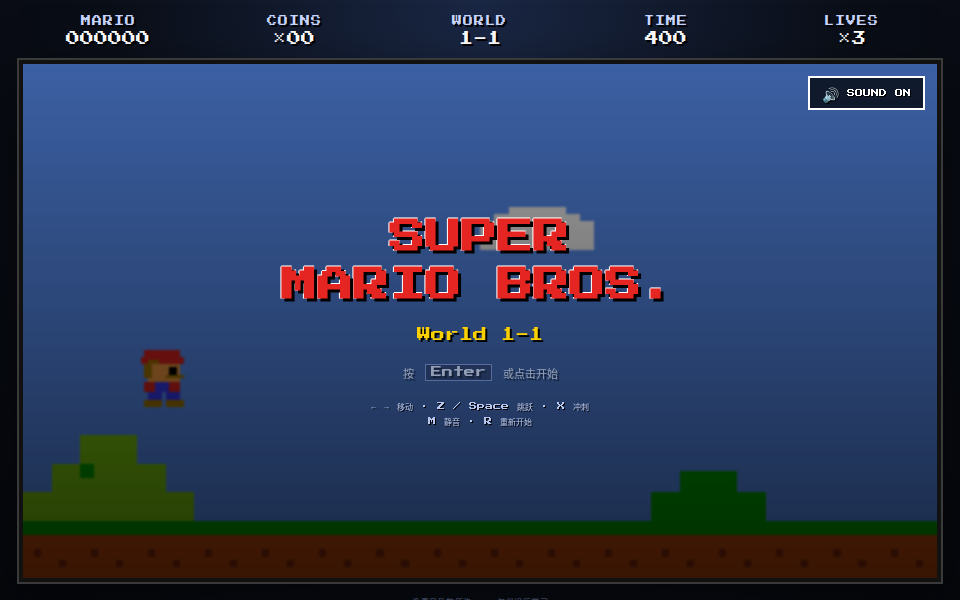
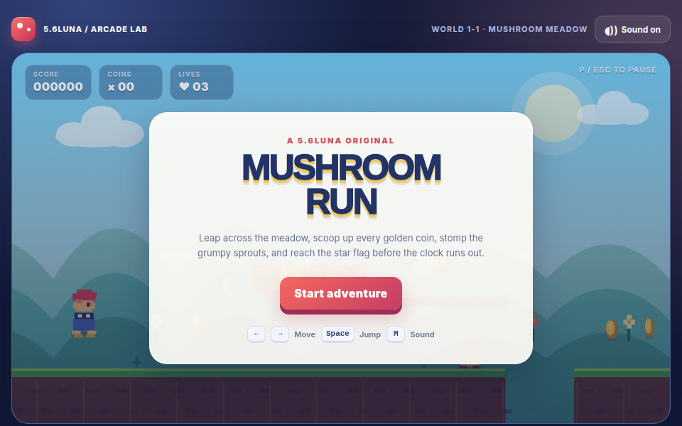

TRACK 01 · LIVE SEASON 01 · NOW PLAYING
LLMARCADE
一句话，做出真的能玩的东西。
马里奥、太阳系，以及接下来更多造物赛道。每个「模型 × 运行环境」都交付可直接体验的网页作品。
正在连接全网票池
·
… 次社区判断
PLAYER SELECT01 / 15

INSERT CURIOSITY
22已核验真实作品
2 条公开造物赛道
0 人工成品修改
2 种社区评测方式
LLM ARCADE INDEX / SEASON 01
综合能力排行榜
每条赛道先合并匿名 Elo 与完整排序，再按赛道权重汇总。点击任意模型查看逐项计算。
综合指数正在读取赛道数据…
LLM ARCADE INDEX / SCORE BREAKDOWN
LLM ARCADE / TRACK SELECT
选择一条赛道
游戏厅不只是一款游戏。每条赛道都有独立作品、评测票池和排行榜，再汇入总榜。
NEXT TRACKS / ROADMAP
后续赛道
新赛道按下列顺序上线。每项任务都必须容易理解，并且产出可以直接运行或体验。
一句话马里奥平台游戏 · 直接试玩
LIVE一句话太阳系交互 3D · 7 份作品已上线
LIVE鹈鹕进化论视觉迭代 · 逐帧进化
QUEUE贪吃蛇自对弈造游戏，也造玩家
QUEUE一句话合成器原创声音 · 盲听 A/B
QUEUE一句话造城3D 场景 · 自由漫游
QUEUETRANSPARENCY SIDEBAR 静态检查副榜 查看 15 个成品的代码特征与完整评分公式 ＋
AUDIT, NOT VERDICT
静态检查榜
这里检查能否加载、是否有音效、触屏和存档等代码特征。它不评价“好不好玩”，正式排名以社区盲投为准。
| # | 代号 | 静态分 | 音效 | 触屏 | 存档 | README | 体积 |
|---|
评分公式： 厂商、模型与运行环境来自公开运行记录；无法核对的字段会明确标注。
PROTOCOL
评测规则
同题
所有参赛者收到逐字相同的 prompt。
全自动
agent 自己规划、写码、运行和迭代。
不修成品
目录只读，发现 bug 也不人工补救。
两种评价
可以匿名 A/B，也可以给全部作品完整排序。
记录范围
马里奥赛道的原始 prompt、15 份原始成品、参赛身份与运行环境均已公开存档。尚未核实的生成时间与运行次数明确标记“待确认”；DeepSeek V4 Pro 的两次运行经过单独披露。后续赛道将在开跑前固化完整运行卡片。
OPEN PROJECT / CONTRIBUTE
参与贡献
赛道提案、问题报告、复现记录和代码修改都公开留档。提交前可先查看评测规则与现有待办。